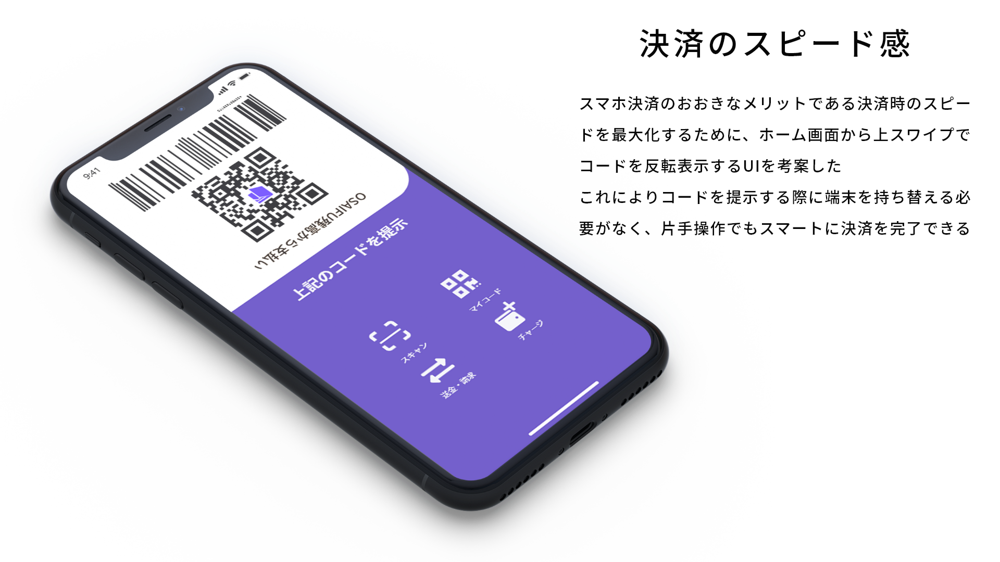

Overview
Schooのオンライン授業の課題として「次も使いたくなる決済アプリ」というテーマのもと様々な決済アプリを研究し、決済アプリとして最適なＵＩを目指した。まったく新しい機能を持ったアプリではなく従来の決済アプリの機能を踏襲しつつユーザビリティを高めるＵＩを目指した。
Process
まず既存の五つの決済アプリ(Line Pay, PayPay, Origami Pay, Kyash, 楽天Pay)の研究を行いそれぞれの利点と弱点をリストアップした。 Line Pay, Pay Payは起動直後の画面にバーコードが表示されており、店頭での支払い時を想定してにスムーズに決済が行えるような工夫が見られた。またOrigami Payは利用可能な店舗を地図ではなく一覧で表示しており、求めている情報を探しやすいと感じた。Line Pay, Pay Pay, Origami Payはタブなどの機能切り替え機能がわかりやすくそれぞれのタブに明確な目的があることがわかった。
次にこれらの決済アプリを実際に使用している人にユーザーインタビューを行った。やはりPay Pay, Line Payなどの起動直後のバーコード表示は使用しやすいと高く評価されていた。また、Pay Pay や Line Pay などの地図機能について聞いたところ多くのユーザーが使わないと答え、Origami Payのような一覧表示のほうがわかりさすそうだと答えていた。

次に必要になる機能をリストアップし、サイトマップを作製した。タブなどの切り分けや情報の優先順位はこのサイトマップに基づいている。まず起動直後の画面は「支払い」タブとして支払いとチャージに関する機能を実装することにした。次に残高管理や履歴確認を行う「財布」というタブを用意した。そして利用可能な店舗検索やクーポン検索などを行う「探す」というタブを用意した。最後にアカウント管理やヘルプなどを行う「マイアカウント」タブを設定した。
Problem
日本においてキャッシュレス決済の比率はいまだに低く、現在官民一体となって推進されている。様々な企業がキャッシュバックなどの様々な施策を行いユーザーを増やそうとしているが、あるデータによると決済アプリの使用者のうち60％以上がユーザーとして定着しなかったことがわかっている。そこで決済アプリのユーザーが使用したいと思う要因と使用をあきらめてしまう要因をリストアップした。
多くのユーザーが決済アプリの使用を始める要因の一つにはポイントなどのキャッシュバックなどで得できるという部分がある。これらの満足度を上げるためには、どれだけ得したのかをＵＩで可視化してユーザーにアピールする必要がある。また、財布を取り出しお釣りなどを取り扱わなければいけない現金の決済に比べてスムーズに決済を行えることも大きな魅力の一つである。起動から決済までをスムーズに行えるようにすることも決済アプリのＵＩに求められる。
次に、ユーザーが使用をやめてしまう要因を考えてみる。ユーザー側が多く感じる問題の一つに決済アプリは多機能なものも多いうえ金銭にかかわる機能が多いため難しいと感じてしまうことがあげられる。それぞれのページやタブがどのような機能を持っているのかわかりやすいＵＩにすることが求められる。さらに、現金を使用する場合に比べてお金を使用している感覚を感じづらく使いすぎてしまうという懸念をよく聞く。グラフなどで使用した金額などのデータを可視化することも大事である。
Output
今回のデザインで特にこだわった部分にユーザーフローの最適化があげられる。 事前に用意したサイトマップをもとにわかりやすいだけでなく、すべての機能に1タップでアクセスできるように気を付けた。クーポン検索と店舗検索はタブで切替できるようにした。
どれだけの金額をどのようなペースで使用しているかを可視化するためにお財布タブにはグラフを配置した。ユーザーがここで求める情報をリストアップしたところ残高の推移、月の予算と使用割合、利用内訳であると考えたため、それらを最もわかりやすく表示できる折れ線グラフ、棒グラフ、円グラフをそれぞれ使用した。またモーダルのスクロールで履歴にアクセスできるほかチャージや出金もページの切り替えなしで1タップでアクセスできる。
さらに店頭での決済をより簡単にしたいというニーズにこたえるため片手で最も簡単にバーコード提示画面に進めるＵＩを考えた。起動後の画面から上にスワイプすることでバーコードが画面上部に反転表示され画面輝度が上がるという機能を考えた。
Customer Journey
今回のデザインでフォーカスしたＵＩがどのようにユーザビリティやユーザーエクスペリエンスの向上に貢献するのかをCJMにストーリー化した。ユーザーの体験のステップを店舗を探す、店頭で利用、残高管理の3ステップに分けた。今回のデザインがこの3つのどのステップにおいても競合より優位になることを意識してデザインを行った。
Review
今回のデザインは既存のサービスを分析し、新たに情報設計をし直す良い演習となった。 しかし決済アプリのユーザーエクスペリエンスはＵＩのみではなく、サービス自体の仕組みなどに大きく左右される。例えば決済アプリ最大手のPay PayやLINE Payなどは楽天グループやライングループのほかのサービスとの連携でユーザーに付加価値を提供していることが大きな強みである。 今回は既存のサービスから内容を大きく変えずにデザインを行うアプローチをとったが、決済アプリというビジネスの中で競合に勝つにはユーザーに新たな価値を提供できるサービス自体のデザインも必要なのではないかと感じた。ユーザーインタビューのフォーカスを既存のアプリのユーザビリティだけでなく、ユーザーの潜在的ニーズにあてて行いよりマクロな視点からデザインを行わなければいけないと学んだ。
Prototype
今回のデザインのプロトタイプを下記リンクから参照可能。
Prototype